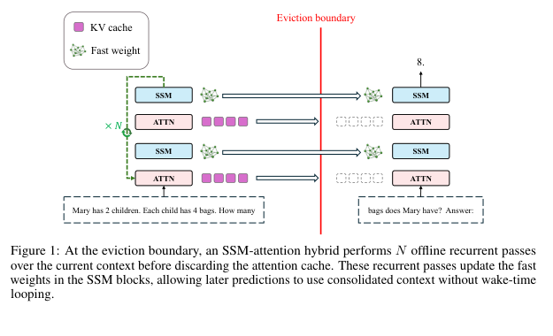
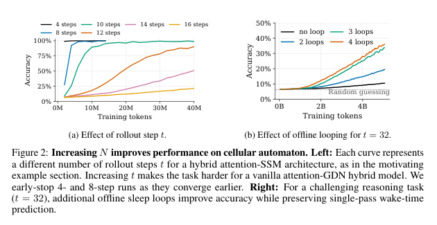
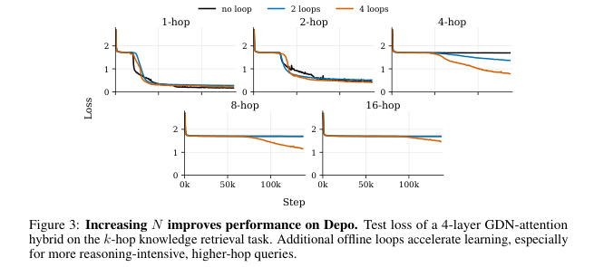
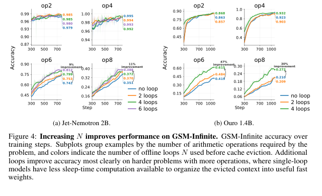
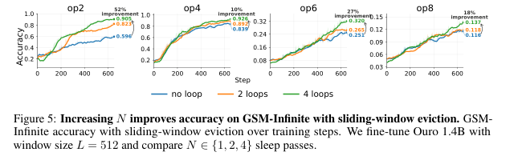
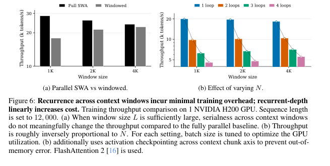

Do Language Models Need Sleep? Offline Recurrence for Improved Online Inference
这篇论文把“sleep”定义成一种离线 memory consolidation：当 attention KV cache 达到窗口边界时，模型不立刻继续读新 token，而是在当前 chunk 上做 $N$ 次 recurrent forward passes，把信息写入 SSM fast weights，然后清空 KV cache。这样额外计算发生在 sleep/consolidation 阶段，wake-time prediction 仍保持单次 forward pass。
1. 研究动机：长上下文记住了，不代表会推理
Transformer 的 KV cache 能精确访问近邻 token，但计算随 context length 呈二次增长，cache memory 线性增长。SSM/linear recurrent layers 用固定大小的 fast-weight memory 压缩历史，能缓解长上下文成本；问题是，压缩进 fast weights 的历史是否还能支持深层 reasoning？论文的答案是：单 pass 的 vanilla SSM-attention hybrid 不够，瓶颈不只是 memory capacity，而是把即将被 eviction 的 context 转换成可用内部状态所需的计算量。
已有 hybrid 的承诺
attention 负责高保真近期访问，SSM fast weights 负责更长历史的压缩记忆。Samba、Griffin、Jet-Nemotron 一类模型都在探索这种路线。
本文发现的缺口
在 Rule 110 和 Depo 这类可控任务里，保持信息量不变、只提高 reasoning depth，vanilla hybrid 会明显退化。这说明它不是简单“容量不够”。
Sleep 的核心假设
把历史写入 fast weights 本身是一个非平凡计算过程，应该允许模型在 eviction 前多花几步计算，就像 replay/consolidation。
| 类比对象 | 机器学习中的对应物 | 论文中的作用 |
|---|---|---|
| 动物 sleep / hippocampal replay | 离线重放短期记忆并固化到更持久的权重中 | 启发模型在无法响应新输入的 sleep 阶段反复处理当前 context。 |
| Depth-recurrent models | 用循环深度增加 test-time 或 latent-time compute | 本文把 recurrence 用于 memory consolidation，而不是预测时再循环。 |
| Context compression / distillation | 把长 context 压成短 hidden state、small KV cache 或临时权重 | 本文不做梯度式 test-time training，而用 learned recurrent forward rule 更新 fast weights。 |
2. 数学表示、建模与算法流程
方法建立在 attention 与 SSM fast-weight memory 的互补性上：attention 保留窗口内 token，SSM 维护固定大小状态 $S_t$。Sleep 的新增动作是：每个窗口 eviction 前，重复运行 blocks $N$ 次，让 SSM 状态被同一段 context 迭代更新；随后丢弃 refined features 和 KV cache，只保留 refined fast weights。
2.1 Attention 与 fixed-size fast weights
给定 token representation $x_t$，standard self-attention 先产生 query、key、value：
$$q_t=W_Qx_t,\qquad k_t=W_Kx_t,\qquad v_t=W_Vx_t.$$KV cache 记为 $K_t=[k_1,\ldots,k_t]^\top$ 与 $V_t=[v_1,\ldots,v_t]^\top$，输出为：
$$o_t=V_t^\top \operatorname{softmax}\left(\frac{K_tq_t}{\sqrt{d}}\right).$$相比之下，Mamba2-style 或 GDN-style linear recurrent layer 可被看作固定大小 fast-weight state 的在线更新：
$$S_t=\alpha_t S_{t-1}+\beta_t v_t k_t^\top,\qquad o_t=S_tq_t.$$这里 $\alpha_t\in(0,1)$ 是 forget gate，$\beta_t\in(0,1)$ 是 input gate。论文实验实际使用 Gated Delta Networks，但作者强调具体 SSM update rule 不是论点核心。
2.2 Hybrid blocks 与 sleep recurrence
一个 hybrid 模型交替堆叠 attention blocks 与 SSM blocks，例如：
$$\operatorname{Embed}\rightarrow B^{\mathrm{attn}}_0\rightarrow B^{\mathrm{ssm}}_1\rightarrow B^{\mathrm{attn}}_2\rightarrow B^{\mathrm{ssm}}_3\rightarrow\cdots\rightarrow B^{\mathrm{attn}}_{D-1}\rightarrow\operatorname{OutProj}.$$Sleep 把 eviction boundary 前的 block computation 改成 $N$ 次循环：
$$\operatorname{Embed}\rightarrow\left[B^{\mathrm{attn}}_0\rightarrow B^{\mathrm{ssm}}_1\rightarrow\cdots\rightarrow B^{\mathrm{attn}}_{D-1}\right]^{\times N}\rightarrow\operatorname{OutProj}.$$当 $N=1$ 时，它退化为普通 SSM-attention hybrid；当 $N>1$ 时，模型在 consolidation phase 花更多计算形成 fast weights，但 prediction phase 仍只做一次 standard forward pass。
分块读入
把 token sequence 按窗口 $L$ 切为 non-overlapping chunks。hard eviction 下每个 chunk 结束后清空 attention cache。
Sleep consolidation
若当前 chunk 的 loss mask 全零，说明它属于 context consolidation 阶段，运行 $N$ 次 blocks 并递归更新 SSM fast weights。
Wake prediction
若 chunk 包含待预测 token，只运行一次 blocks，计算 masked cross entropy loss，并通过完整计算图反传。

Algorithm 1 的可读版：hard eviction sleep training
- 输入 tokens $x$、loss mask $m$、window size $L$、sleep passes $N$；初始化 SSM fast weights $S$。
- 把 $x,m$ 切成长度不超过 $L$ 的 chunks。
- 对每个 chunk $c$，先计算 $h\leftarrow\operatorname{Embed}(c)$。
- 如果 chunk 的 loss mask 全零，则进入 consolidation phase：对 $n=1,\ldots,N$ 执行 $h,S\leftarrow\operatorname{Blocks}(h,S)$。
- 否则进入 prediction phase：只执行一次 $h,S\leftarrow\operatorname{Blocks}(h,S)$，再用 $\mathcal{L}\leftarrow\operatorname{MaskedCE}(\operatorname{OutProj}(h),c,m_c)$ 计算损失。
- 通过整个过程反传并更新模型参数。注意：sleep 后 refined features 被丢弃，梯度主要通过 refined fast weights 的形成过程传回。
3. 实验设计与复现细节
实验的共同检验问题是：在 context 已经被 eviction、预测阶段只能 single forward pass 的约束下，更多 sleep-time recurrence 是否能帮助模型对历史 context 做更深推理？论文使用两个合成可控任务和一个更接近自然语言数学推理的 GSM-Infinite。
| 实验 | 任务/数据 | 模型与窗口 | 变量 | 指标 | 关键信息 |
|---|---|---|---|---|---|
| Motivating Rule 110 | 4 个独立 length-24 binary states，预测各自经过 $t$ 次 Rule 110 rollout 后的 first bit。 | 4-layer GDN-attention hybrid，layout 为 attention -> GDN -> attention -> GDN；hard eviction，$L=24$。 | rollout depth $t$。 | exact accuracy。 | sequence length 固定，改变 $t$ 隔离 reasoning depth；vanilla hybrid 随 $t$ 增大明显退化。 |
| Cellular automaton with sleep | 同 Rule 110，但使用困难设置 $t=32$。 | 同 4-layer hybrid，hidden dimension $d=256$。 | $N\in\{1,2,3,4\}$ sleep loops。 | accuracy over training tokens。 | no-loop Muon LR 先调优为 $2\times10^{-3}$，looped models 沿用同一 LR，给 baseline 有利条件。 |
| Depo | shuffled directed cycle + 10 query-answer pairs；cycle 至多 75 nodes、300 tokens，query 部分至多 60 tokens。 | Jet-Nemotron-style 10-layer model from scratch，$d=512$，hard eviction $L=75$，总长 $T=360$。 | $N\in\{1,2,4\}$；训练时 $k\sim[1,16]$，测试 $k\in\{1,2,4,8,16\}$。 | held-out test loss。 | cycle 被分散到 4 个 cache windows；query 未知，必须形成 query-agnostic graph memory。 |
| GSM-Infinite | procedurally generated math word problems，2,000-3,300 tokens，operations uniform from 1 to 8；1,600 held-out examples。 | Jet-Nemotron 2B 与 Ouro 1.4B；hard eviction $L=2000$。 | Jet: $N\in\{1,2,4,6\}$；Ouro: $N\in\{1,2,4\}$。 | accuracy by operation count。 | question 放在 context 前，数据不含 Chain-of-Thought，强制 single-pass final answer。 |
| Sliding-window eviction | GSM-Infinite。 | Ouro 1.4B + inserted Jet layers，sliding-window $L=512$。 | $N\in\{1,2,4\}$。 | accuracy by operation count。 | 先只 warm up Jet layers 1 epoch，再全模型训练 2 epochs；作者指出 $N>1$ 时 hard-eviction warm-up 很关键。 |
Optimizer 与 LR
所有实验使用 Muon optimizer。AdamW learning rate 固定为 $5\times10^{-5}$，只调 Muon LR；automaton 与 Depo 的 no-loop baseline 调得 $2\times10^{-3}$ 后，looped models 复用同一值。
Batch size 与 compute
batch size: automaton 512，Depo 128，GSM-Infinite 256。automaton 小于 1 个 A6000 GPU-day；Depo 与 GSM-Infinite 每 run 约 1-2 个 H100 GPU-day。
复现缺口
论文没有发现公开代码链接；Muon 配置、数据生成脚本、exact prompt/template、随机种子列表与训练稳定化细节仍需从作者代码或人工实现中补齐。
4. 实验结果与核心结论
整体结果支持一个清晰趋势：当任务需要对已 eviction 的 context 做更深 sequential computation 时，增加 sleep duration $N$ 能提高学习速度和最终性能；最明显的收益出现在高 rollout steps、高 hop count、更多 arithmetic operations 或更小 attention window 的设置。


| 结果点 | 论文报告的数字 | 解释 |
|---|---|---|
| Rule 110, $t=32$ | no loop 约 10%；2 loops 约 20%；3/4 loops 超过 30%。 | context length、eviction rule、prediction-time compute 都固定，因此提升来自 sleep-time consolidation。 |
| Jet-Nemotron 2B, GSM-Infinite op6 | 6 loops: 0.812；no loop: 0.742。 | 更复杂 arithmetic chain 下，额外 offline recurrence 提升最终 accuracy 约 9%。 |
| Jet-Nemotron 2B, GSM-Infinite op8 | 6 loops: 0.388；no loop: 0.351。 | 8-operation 设置仍难，但 loop count 增加保持正向收益。 |
| Ouro 1.4B, GSM-Infinite op6 | 4 loops: 0.615；no loop: 0.419。 | 相对提升更大，作者推测可能与 Ouro 的 depth-recurrent pretraining 有关。 |
| Ouro 1.4B, GSM-Infinite op8 | 4 loops: 0.272；no loop: 0.210。 | hard problems 上收益存在，但 absolute accuracy 仍低，说明方法不是完全解决长推理。 |
| Sliding-window, Ouro 1.4B, $L=512$ | op2: 0.596 -> 0.905；op4: 0.839 -> 0.926；op6: 0.251 -> 0.320；op8: 0.116 -> 0.137。 | 窗口远小于总长时，sleep 不只帮助多步推理，也帮助压缩和检索 relevant context。 |
论文没有正式实验表；本表重建自正文明确数值与 Figure 4/5 标注的终点值。曲线中未在正文给出的中间点不作为精确数值主张。



5. Figure / Table 导航
自动 PDF image extraction 只提取到 1 个很小的嵌入图像，因此本页使用 PDF rendered pages 的本地裁剪作为主要 figure 来源。图像来自实际论文页面，不是重绘图；细小曲线读数需人工核对，页面只引用正文或图中清楚标注的数字。
| 编号 | PDF 页 | 内容 | 页面覆盖情况 |
|---|---|---|---|
| Algorithm 1 | Page 6 | LLM sleep training with hard eviction。 | 已在方法区用中文逐步重写，并保留 loss mask、window size、sleep passes 等变量。 |
| Figure 1 | Page 6 | eviction boundary 前 $N$ 次 offline recurrent passes 更新 SSM fast weights。 | 已用页面裁剪图嵌入。 |
| Figure 2 | Page 8 | Cellular automaton: rollout step 与 sleep loops 的影响。 | 已用页面裁剪图嵌入，并重述正文关键数字。 |
| Figure 3 | Page 8 | Depo: 不同 hop count 下 test loss 随 training step 变化。 | 已用页面裁剪图嵌入；曲线终点未全部读数，不编造精确表格。 |
| Figure 4 | Page 10 | GSM-Infinite hard eviction: Jet-Nemotron 2B 与 Ouro 1.4B。 | 已用页面裁剪图嵌入，并重建 op6/op8 关键结果表。 |
| Figure 5 | Page 10 | GSM-Infinite sliding-window eviction, Ouro 1.4B, $L=512$。 | 已用页面裁剪图嵌入，并列出图中终点值。 |
| Figure 6 | Page 11 | training throughput: windowed recurrence 与 varying $N$。 | 已用页面裁剪图嵌入；精确 throughput 数字只按图展示，需人工核对。 |
| Tables | 无正式表格 | 论文未包含编号 Table。 | 本页重建实验矩阵、关键结果表和复现清单。 |
需人工核对
PDF 渲染页可确认主要图形、图注和趋势；但 Figure 2/3/6 中部分曲线点没有正文数值，若后续需要精确 CSV 或 plot data，需要作者代码或手动 digitization。
6. 复现清单
复现这篇论文需要两个层次：先复现 hard-eviction sleep training 的机制，再复现实验曲线。论文给了较多 training setup，但没有代码链接，也没有 appendix；因此严格复现仍缺数据生成脚本、完整模型配置和训练稳定化细节。
最小机制复现
- 实现一个交替 attention/GDN 或 attention/linear-attention 的小模型。
- 支持按窗口 $L$ 切 chunk，并在 consolidation chunk 上运行 $N$ 次 blocks。
- 每个 eviction boundary 后清空 attention cache，只保留 SSM fast weights。
- prediction chunk 只运行一次 forward，使用 masked cross entropy。
- 反传必须覆盖 sleep passes，否则学不到如何形成 fast weights。
数据与评估
- Rule 110: 4 个 length-24 binary strings，label 是 $t$ rollout 后 first bit。
- Depo: shuffled directed cycle，最多 75 nodes，10 个 query-answer pairs。
- GSM-Infinite: 1,600 held-out examples，2,000-3,300 tokens，operations 1 到 8。
- 按 operation count 或 hop count 分桶报告，不只看整体平均。
仍缺的实现细节
- GDN/Jet layer 的 exact implementation 和 initialization。
- Muon optimizer 的完整参数、scheduler、weight decay、gradient clipping。
- GSM-Infinite 的 exact generation prompts/templates。
- Jet-Nemotron 与 Ouro 改层位置、插入 Jet layers 的代码。
- 随机种子列表和训练失败/重跑策略。
| 复现实验 | 建议目的 | 成功判据 |
|---|---|---|
| $N$ sweep | 验证 sleep duration 与 reasoning depth 的单调关系。 | 在 $t=32$ Rule 110 或 higher-hop Depo 上，$N>1$ 明显优于 $N=1$。 |
| Hold capacity fixed | 排除“只是参数更多/内存更大”的解释。 | 保持模型大小、sequence length、window $L$ 不变，只改变 sleep passes。 |
| Prediction latency audit | 确认方法没有偷偷在 wake-time 增加 chain-of-thought 或 recurrent decoding。 | prediction chunk 每 token 仅一次 forward；额外计算只发生在 eviction 前。 |
| Sliding-window warm-up ablation | 检查 hard-eviction warm-up 对 $N>1$ 的必要性。 | 去掉 SSM-only warm-up 或 hard-eviction warm-up 后，Figure 5 趋势应有可测下降。 |
| Throughput benchmark | 评估序列维度串行化与 recurrent depth 的成本。 | 复现 Figure 6 的两个结论：大 $L$ 时 window serialness 开销小，成本随 $N$ 近似线性增长。 |
7. Reviewer Critique
这篇论文的主要贡献是把长上下文记忆问题从“容量够不够”推进到“eviction 前是否有足够计算把 context 组织成可用 fast weights”。证据链比较干净，尤其是 Rule 110 和 Depo 对 reasoning depth 的控制；但实证规模、代码可复现性和与其他 context-compression/test-time-training 方法的直接比较仍不够强。
Strengths
- 问题定义清楚：额外 compute 移到 consolidation phase，prediction latency 保持 single-pass。
- 合成任务设计能独立改变 reasoning depth，而不是把长度、检索量和推理难度混在一起。
- 从 scratch 小模型到 pretrained Jet/Ouro 都看到同向趋势，说明现象不是单一玩具任务。
- 讨论了训练吞吐和 serialness，不只报告 accuracy。
Weaknesses
- 没有公开代码链接，导致 layer insertion、training stability、data generation 的复现成本较高。
- GSM-Infinite 仍是 synthetic math benchmark，离真实长上下文 agent/QA/workflow 还有距离。
- loop count 增加带来训练成本近似线性增加，收益是否抵得过成本需要更多 cost-normalized 分析。
- 与 context distillation、test-time gradient update、KV compression 的 head-to-head baseline 还不充分。
Missing Ablations
- 同等训练 FLOPs 下，更多 sleep passes vs 更长训练 token budget。
- 只循环 SSM blocks、只循环 attention blocks、循环 middle blocks vs all blocks。
- 不同 window sizes $L$ 与 sequence length $T$ 的交互。
- fast-weight state size 改变时，capacity 与 computation 的相对贡献。
- 使用真实 long-context QA 或 coding agent trajectory 的外部有效性测试。
Possible Failure Modes
- 如果任务需要精确逐 token recall，固定 fast weights 仍可能损失不可压缩信息。
- sleep consolidation 使训练跨窗口串行，长序列和大 $N$ 下更难稳定扩展。
- 模型可能学习到 dataset-specific compression shortcut，而不是真正通用的 planning/reasoning。
- online serving 中 sleep 阶段会暂停接收新输入；适合批处理或明确 chunk boundary 的场景，不一定适合低延迟交互。
8. 对我的研究方向的启发
对 agent、RLVR、自进化、replay、diversity 和 evaluation 方向，这篇论文最可迁移的不是“睡眠”这个比喻，而是把 offline compute 用于整理未来会被反复使用的内部状态。
Agent memory consolidation
长程 agent 轨迹不必全部留在 active context；可以在 episode/chunk boundary 做 learned replay，把关键 state 写入 compact memory。
Questioner-Solver
Questioner 生成的问题可作为 sleep-time replay curriculum，让 solver 在回答前先把历史证据压缩成可查询 fast state。
RLVR / self-evolution
奖励不只评价最终答案，也可以评价 consolidation 后的 latent memory 是否支持后续 verifier queries。
Replay buffer
睡眠阶段像可微 replay：不是采样旧经验再训练参数，而是在当前 inference episode 内迭代更新 fast weights。
Diversity of compute
把 compute 分成 wake-time prediction compute 与 sleep-time state-formation compute，有助于设计更细粒度的 test-time scaling 策略。
Evaluation design
应构造能固定 information load、单独改变 reasoning depth 的 benchmark，否则很难判断模型是在记不住还是算不动。
一句话结论
LLM sleep 的实质是“在遗忘 attention cache 之前，多花可学习的离线计算把历史转成 fast weights”；它把长上下文瓶颈从存储问题扩展为存储加计算分配问题。